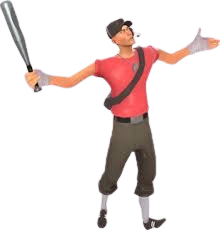

Scout de Team Fortress 2


Bate
Bate es una clase ideal para peleas agresivas y flanqueoEs un luchador veloz con un bate de béisbol y una actitud sarcástica y directa.
Bate
Bate es una clase ideal para peleas agresivas y flanqueoEs un luchador veloz con un bate de béisbol y una actitud sarcástica y directa.